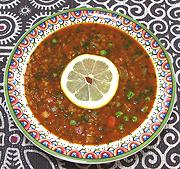

|
Bulgur & Vegetable SoupTunisia - Borghol Jeri bil Khodrha | ||||
| Makes: Effort: Sched: DoAhead: |
10 cups *** 2-1/4 hrs Yes |
This is a substantial and very flavorful soup, sure to please - but most amazing - it's a North African dish you can serve to vegetarians! Maghrebis usually stuff Lamb into anything that doesn't already have Beef, Fish or Chicken. See also Comments. | |||
|
|
1/4 2 1/2 ------- 4 11 2-1/2 6 4 ------- 4 1/2 1/4 3 2 2-1/2 1/2 ------- 1/4 1/4 10 ------- 1/4 8 1/3 ------- |
c T c ----- oz oz oz oz oz ----- cl c c T T t t ----- c c med ----- c c c ----- |
Chickpeas (1) Lentils Bulgur (2) -- Vegetables Fava Beans (3) Onion Carrot Turnip Celery -- Seasonings Garlic Tomato Sauce (4) Harissa (5) Paprika Caraway Seeds Salt Pepper -- Herbs Parsley, flat Cilantro Spinach Leaves -------------- Olive Oil, ExtV Water Peas, frozen -- Serve With Lemon Quarters (6) |
PREP - (45 min work (exclusive of preparing fava beans if needed) - +8 hrs soak time (if dried chickpeas))
|